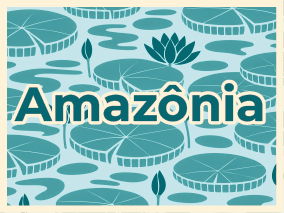
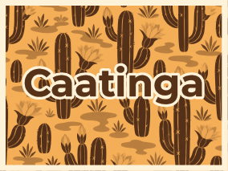
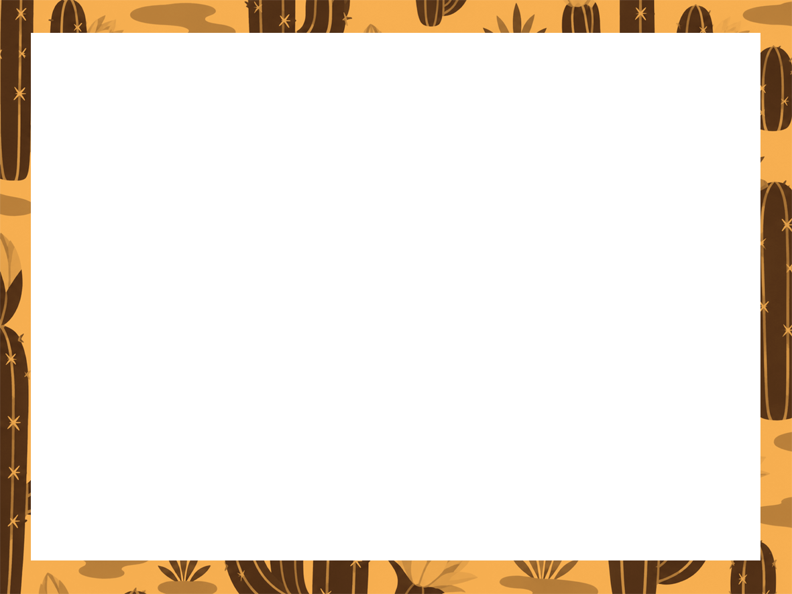
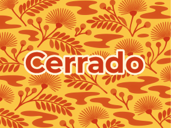
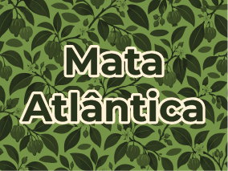
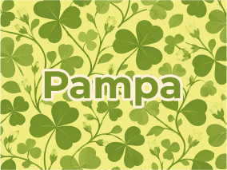
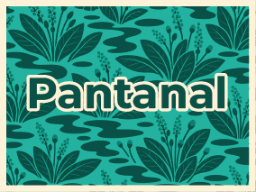
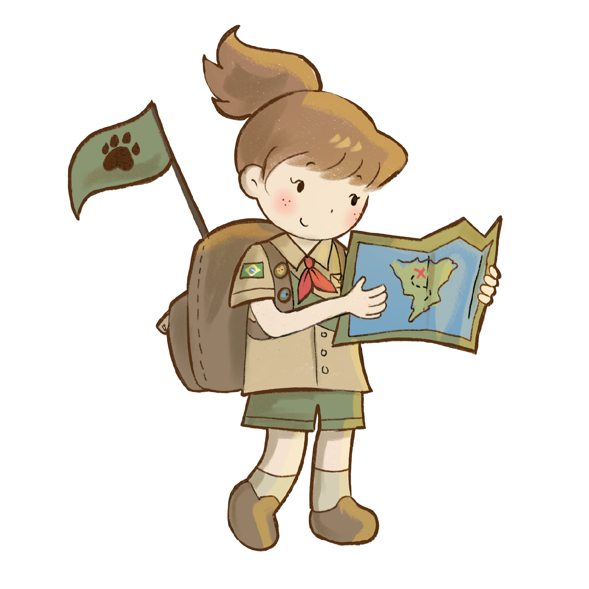
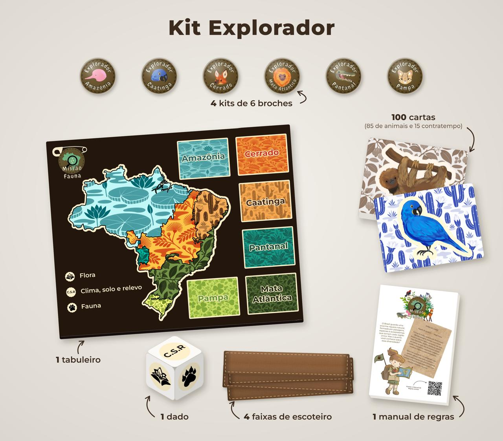

Diário de Campo
Registro de expedição — Missão Fauna
Ao longo de minhas expedições pelo Brasil, percorri diferentes paisagens, atravessei os seis biomas brasileiros e descobri espécies que tornam cada região única. Entre trilhas, desafios e descobertas, aprendi que explorar vai muito além de encontrar animais: é conhecer seus habitats, compreender a natureza e reconhecer a riqueza da nossa biodiversidade.
Reuni neste diário algumas experiências, informações e aprendizados de minhas viagens, que poderão ajudar aqueles que estão prestes a iniciar sua própria jornada. Cada bioma guarda descobertas, e todo explorador precisa estar preparado para o que encontrará pelo caminho.

O maior bioma brasileiro abriga a maior floresta tropical do mundo, sendo conhecido por sua enorme biodiversidade. Sua vegetação densa, rios extensos e clima úmido formam um ambiente essencial para milhares de espécies de animais e plantas, muitas delas encontradas somente nessa região.


Único bioma exclusivamente brasileiro, a Caatinga é marcada pelo clima semiárido, com altas temperaturas e longos períodos de estiagem. Sua vegetação possui adaptações para sobreviver à falta de água, como cactos e arbustos que perdem suas folhas durante a seca. Mesmo diante dessas condições, abriga uma grande variedade de espécies.

Conhecido como a savana brasileira, o Cerrado apresenta paisagens variadas, com campos abertos, árvores de troncos retorcidos e raízes profundas. Seu clima possui períodos bem definidos de chuva e seca, e sua vegetação abriga uma grande diversidade de animais, além de contribuir para o abastecimento de importantes bacias hidrográficas.

A Mata Atlântica é um dos biomas mais ricos em biodiversidade do planeta, apresentando florestas densas, rios, cachoeiras e diferentes formações vegetais. Estende-se por grande parte do litoral brasileiro e abriga inúmeras espécies de animais e plantas. Apesar de sua riqueza natural, sofre com o desmatamento e a fragmentação de seus habitats.

Localizado no extremo sul do Brasil, o Pampa é caracterizado por extensos campos naturais, vegetação rasteira e grandes áreas abertas. O bioma possui grande importância ecológica e cultural, mas enfrenta ameaças como a expansão agrícola e a substituição dos campos naturais.

O Pantanal é uma das maiores planícies alagáveis do mundo, conhecido pelo ciclo de cheias e secas que transforma sua paisagem ao longo do ano. Durante as inundações, rios e áreas alagadas favorecem a vida de diversas espécies, tornando o bioma um importante refúgio para animais como a onça-pintada, a arara-azul e o tuiuiú.
Agora é sua vez de partir. Leve consigo tudo o que aprendeu até aqui, esteja atento aos desafios e prepare-se para conquistar seus próprios broches de exploração. O Brasil ainda tem muito a revelar, e sua expedição está apenas começando.
Missão do Explorador

Sua missão é percorrer os seis biomas brasileiros, conhecer suas espécies e superar os desafios que encontrar pelo caminho.
Para conquistar o broche de cada bioma, você deverá reunir cartas que representem sua fauna. Para isso, colete uma carta de cada animal exigido ou utilize cartas de contratempo, que podem substituir cartas de animais e ajudar a completar sua coleção.
- Amazônia: 3 animais diferentes;
- Caatinga: 3 animais diferentes;
- Cerrado: 3 animais diferentes;
- Mata Atlântica: 3 animais diferentes;
- Pantanal: 3 animais diferentes;
- Pampa: 2 animais diferentes;
Ao completar sua coleção e conquistar os seis broches de exploração, você estará pronto para receber o título de Grande Explorador e vencerá o jogo.
Mas atenção: observe as respostas dos outros jogadores. As informações compartilhadas durante a expedição podem ser valiosas para os próximos desafios!
